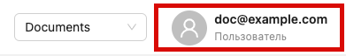
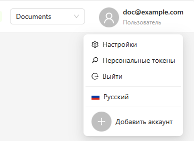
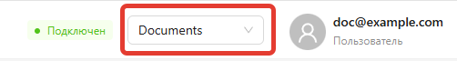

Marketaut
MarketAut — это платформа для подключения ИИ-инструментов и автоматизации рабочих процессов.
Основные концепции, используемые на платформе:
- Пользователь
- Команда
- Диаграмма
- Аккаунт
- ИИ-агент
Пользователь
Пользователь — это зарегистрированный участник платформы.
Пользователь может входить в одну или несколько команд, работая с общими диаграммами и аккаунтами каждой из них.
Информация о пользователе отображается в правом верхнем углу экрана:

При нажатии на профиль пользователя открывается меню:

В меню можно:
1. Изменить настройки пользователя
2. Создать персональный токен*
3. Выйти из платформы
4. Изменить язык интерфейса
5. Добавить еще один аккаунт
Команда
Команда — это общее рабочее пространство, в котором пользователи совместно работают с диаграммами, аккаунтами и другими ресурсами.
Все аккаунты, диаграммы и другие ресурсы создаются и хранятся в рамках команды и доступны её участникам. Приглашенные пользователи получают доступ ко всем ресурсам команды.
Все участники команды работают с одними и теми же ресурсами, поэтому нет необходимости передавать файлы или дублировать настройки.
При регистрации пользователя автоматически создаётся новая команда.
Текущая команда отображается в правой верхней части экрана:

Если вы состоите в нескольких командах, переключаться между ними можно через этот список.
Диаграмма
Диаграмма — это визуальная схема автоматизации. На её холсте вы размещаете модули и соединяете их между собой, формируя необходимую логику работы.
Одна диаграмма - одна автоматизация. Например, диаграмма может описывать подключение магазина Wildberries к МСР - серверу.
Все диаграммы хранятся в команде и доступны её участникам.
Подробнее о диаграммах см. в разделе Диаграммы
Аккаунт
Аккаунт — это сохранённые учётные данные для подключения к внешнему сервису. Например, API-токен Wildberries или логин и пароль другого сервиса.
Аккаунт настраивается один раз, после чего может использоваться в любых модулях, которым требуется доступ к соответствующему сервису. Это позволяет не вводить один и те же данные повторно в каждом модуле.
Все аккаунты хранятся в команде и доступны её участникам.
Подробнее об аккаунтах см. в разделе Аккаунты